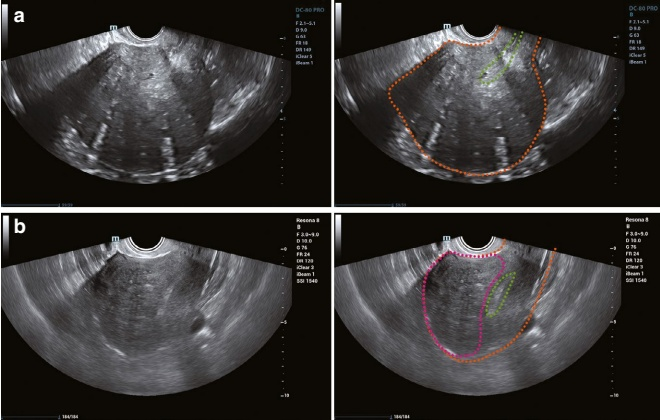
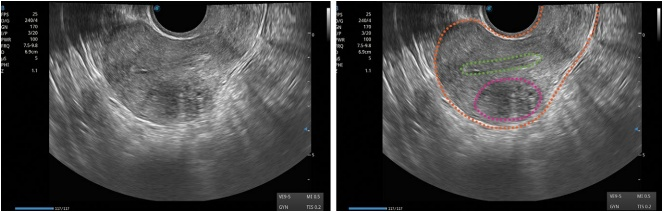
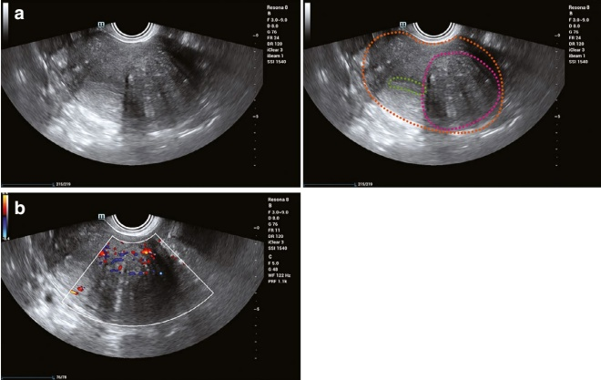
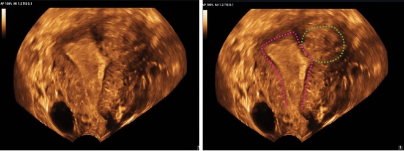
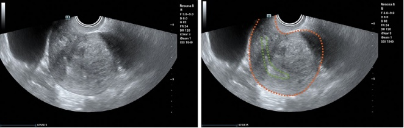

7.2.3 子宫腺肌病
1. 临床概述：
子宫腺肌病的特征是在子宫肌层内弥漫性或局灶性地存在内膜腺体和间质，导致子宫增大和功能障碍[42]。
- 临床表现：
(1) 异常子宫出血：
- 通常表现为月经量增多（月经过多）和/或月经周期延长。
• 重度病例可能导致贫血。
(2) 腹痛：
• 包括进行性继发性月经痛和慢性盆腔疼痛
(3) 其他症状：
• 不孕症
• 反复流产
• 疼痛性性交及其他
(4) 体征：
妇科检查可能发现：
• 子宫均匀增大或局灶性结节性隆起
子宫僵硬伴压痛
• 子宫活动度差
3. 超声特征：
(1) 子宫腺肌病病灶的超声特征
子宫腺肌病根据病灶范围和回声特征可分为弥漫性和局限性两种类型[43, 44]：
(a) 弥漫型：
子宫呈球形对称性增大，内膜条带居中。
子宫肌层增厚，回声不均质，常可见粗颗粒状回声和扇形阴影。
子宫前壁和后壁不对称增厚很常见，尤其是在后壁和子宫底，伴有内膜条带移位（见图 7.49）。
(b) 局灶型（见图 7.50 和 7.51）：
局灶性子宫腺肌病进一步分为子宫腺肌瘤和囊性子宫腺肌病：
子宫腺肌瘤:
- 子宫肌层内呈异质性低回声的结节性病变，常伴有扇形阴影
与正常子宫肌层界限不清
囊性子宫腺肌症：表现为子宫肌层内单个或多个充满液体的区域，含有陈旧出血的细点状回声
7.2.3 Uterine Adenomyosis
1. Clinical overview:
Adenomyosis is characterized by the diffuse or localized presence of endometrial glands and stroma within the myometrium, leading to uterine enlargement and dysfunction [42].
- Clinical manifestations:
(1) Abnormal uterine bleeding:
- Often presents as increased menstrual flow (menorrhagia) and/or prolonged menstrual periods.
• Severe cases may lead to anemia.
(2) Abdominal pain:
• Includes progressive secondary dysmenorrhea and chronic pelvic pain
(3) Other symptoms:
• Infertility
• Recurrent miscarriage
• Painful intercourse and others
(4) Physical signs:
Gynecological examination may reveal:
• A uniformly enlarged uterus or focal nodular elevations
Uterine stiffness with tenderness
• Poor uterine mobility
3. Ultrasonographic features:
(1) Sonographic features of adenomyosis lesions
Adenomyosis is classified into diffuse and focal types based on lesion extent and echogenic characteristics [43, 44]:
(a) Diffuse type:
The uterus is symmetrically enlarged in a spherical shape with a centralized endometrial stripe.
The myometrium is thickened with heterogeneous echogenicity, often showing coarse granular echoes and fan-shaped shadowing.
Asymmetric thickening of the anterior and posterior uterine walls is common, especially in the posterior wall and fundus, with displacement of the endometrial stripe (see Fig. 7.49).
(b) Focal type (see Figs. 7.50 and 7.51):
Focal adenomyosis is further classified into adenomyoma and cystic adenomyosis:
Adenomyoma:
- Nodular lesions in the myometrium with heterogeneous hypoecho-genicity, often accompanied by fan-shaped shadowing
Poorly demarcated from normal myometrium
Cystic adenomyosis: Appears as single or multiple fluid-filled areas within the myometrium containing fine punctate echoes of old hemorrhage



(2) 关键特征：
- 位于子宫肌层内的小液性区域，代表异位腺体的囊性扩张。
子宫内膜-肌层交界不清，常增厚、不规则或中断。
• 子宫内膜下高回声线、芽或岛状物提示基底子宫内膜组织侵犯（见图 7.52）。
(3) “问号征” [45] （见图 7.53）：
在合并后盆腔子宫内膜异位症的情况下，子宫形态呈“问号”状。
子宫向后屈曲，宫底朝向后盆腔，宫颈朝向膀胱。
• 子宫滑动征阴性。
(4) 彩色多普勒和频谱多普勒超声（见图 7.51）：
受累子宫肌层内血流增加，血管呈垂直于宫腔/浆膜方向走行。
常可检测到中等阻力动脉谱。
(2) Key features:
- Small fluid areas within the myometrium representing cystic dilatation of ectopic glands.
Poorly defined endometrial–myometrial junction, often thickened, irregular, or interrupted.
• Hyperechogenic lines, buds, or islands under the endometrium indicate basal endometrial tissue invasion (see Fig. 7.52).
(3) “Question Mark Sign” [45] (see Fig. 7.53):
Uterine morphology resembles a “question mark” in cases combined with posterior pelvic endometriosis.
The uterus flexes backward, with the fundus oriented toward the posterior pelvis and the cervix toward the bladder.
• Negative uterine sliding sign.
(4) Color Doppler and spectral Doppler ultrasound (see Fig. 7.51):
Increased blood flow within the affected myometrium, with vessels running perpendicular to the uterine cavity/serosa.
Moderate resistance arterial spectra are often detected.


4. 鉴别诊断：
子宫腺肌病必须与子宫肉瘤鉴别，后者主要发生在中年和老年女性中，常起源于平滑肌瘤的肉瘤样变。子宫肉瘤的关键区别特征包括以下几点：
- 快速生长：纤维瘤在短时间内突然和显著增大
• 彩色多普勒：异常丰富的血流
• 频谱多普勒：肿瘤内低阻力动脉谱
- 对生育能力和治疗原则的影响：
子宫腺肌病与不孕和不良妊娠结局风险增加相关，包括早产和流产。对于希望保留生育功能的患者，推荐使用促性腺激素释放激素拮抗剂治疗后进行体外受精-胚胎移植（IVF-ET）。对于无生育需求的患者，可选择子宫切除术、局部病灶切除或放置左炔诺孕酮释放宫内节育器来管理症状。
4. Differential diagnosis:
Uterine adenomyosis must be differentiated from uterine sarcoma, which primarily occurs in middle-aged and elderly women and often arises from sarcomatous degeneration of a fibroid. Key distinguishing features of uterine sarcoma include the following:
- Rapid growth: A sudden and significant increase in the size of a fibroid over a short period
• Color Doppler: Abnormally abundant blood flow
• Spectral Doppler: Low-resistance arterial spectra within the tumor
- Impact on fertility and treatment principles:
Adenomyosis is associated with infertility and increased risks of adverse pregnancy outcomes, including preterm labor and miscarriage. For patients seeking to preserve fertility, hormonal therapy with GnRH antagonists followed by IVF-ET is recommended. For those without fertility needs, options include hysterectomy, localized lesion removal, or placement of a levonorgestrel-releasing intrauterine system to manage symptoms.